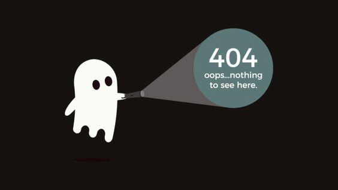

<!DOCTYPE html>

<html lang="en">

<head>
    <meta charset="UTF-8">
    <meta http-equiv="X-UA-Compatible" content="IE=edge">
    <meta name="viewport" content="width=device-width, initial-scale=1.0">
    <title>zalias kodas</title>
</head>

<body style="background-color: rgb(22,18,15,255);">


          
           
           
  
    </main>
</body>

</html>
<a style= "font-family: Verdana, Geneva, Tahoma, sans-serif; text-decoration: none; color: rgba(255, 255, 255, 0.841); border: 2px solid rgb(81, 173, 213, 0.841); padding: 10px; padding-left: px; padding-right: 20px; ; margin-top: 600px; display: inline-block; border-radius: 50px;margin-left:-700px ;  font-size: 50px" href="https://www.youtube.com/" >Go to home</a> 


</div>

<!-- 

style=""

Stiliaus savybiu rasymo sablonai:

savybe: reiksme;
ilga-savybe: reiksme;
labai-ilga-savybe: reiksme;
tikrai-labai-ilga-savybe: reiksme;

savybe: reiksme1 reiksme2 reiksme3 reiksme4;

KONKRETUS VARIANTAI:
-------------------------------

Fono spalva:
background-color: white;

KRASTINES:
border: 1px solid red;

Tarpusavio elementu atsistumimas:
margin: 10%;                    visomis kryptimis aplink
margin-top: 10%;                atsistumimas nuo virsaus
margin-right: 10%;              atsistumimas is desines
margin-bottom: 10%;             atsistumimas nuo apacios
margin-left: 10%;               atsistumimas is kaires

Atsistumas tarp elemento krasto ir jo turinio:
padding: 10%;                    visomis kryptimis aplink
padding-top: 10%;                atsistumimas nuo virsaus
padding-right: 10%;              atsistumimas is desines
padding-bottom: 10%;             atsistumimas nuo apacios
padding-left: 10%;               atsistumimas is kaires

TEKSTAI:
font-size: 40px;
font-weight: normal;
font-weight: bold;
color: red;
text-transform: uppercase;

ELEMENTU ATVAIZDAVIMO BUDAS:
display: block;                 default - is virsaus i apacia
display: inline;                elgiasi, kaip "zodziai tekste"
display: inline-block;          elementas platus tiek kiek jame yra turinio, bet ne platesni nei tevas

PRIVERSTINIS ELEMENTU SUSTUMIMAS:
float: left;
float: right;

-->